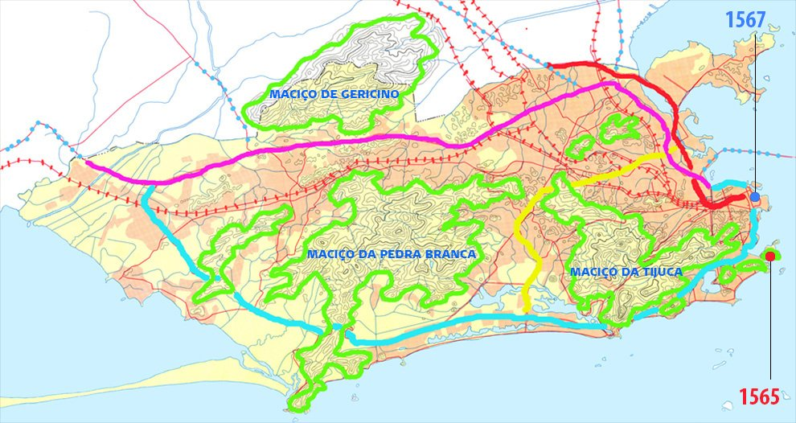

RioRio › Atividades › Atividade 4
Resumo da história do Rio · Atividade 4
O município do Rio e as principais vias
No mapa abaixo vemos, em destaque, onde a nossa cidade do Rio de Janeiro foi fundada, em 1565, e onde ela começou a crescer, a partir de 1567. Vemos também a indicação das principais vias expressas que cruzam o município e as linhas de trem.
Analise o mapa, faça uma pesquisa em outros mapas e descubra o nome de cada via indicada na legenda. Depois, arraste o nome de cada via para o retângulo correspondente da legenda.
Mapa do município e as vias expressas

Legenda: arraste o nome de cada via
Nome das vias
AVENIDA BRASIL
LINHA AMARELA
LINHA VERMELHA
LINHAS DE TREM
Muito bem! Você completou a atividade 4.